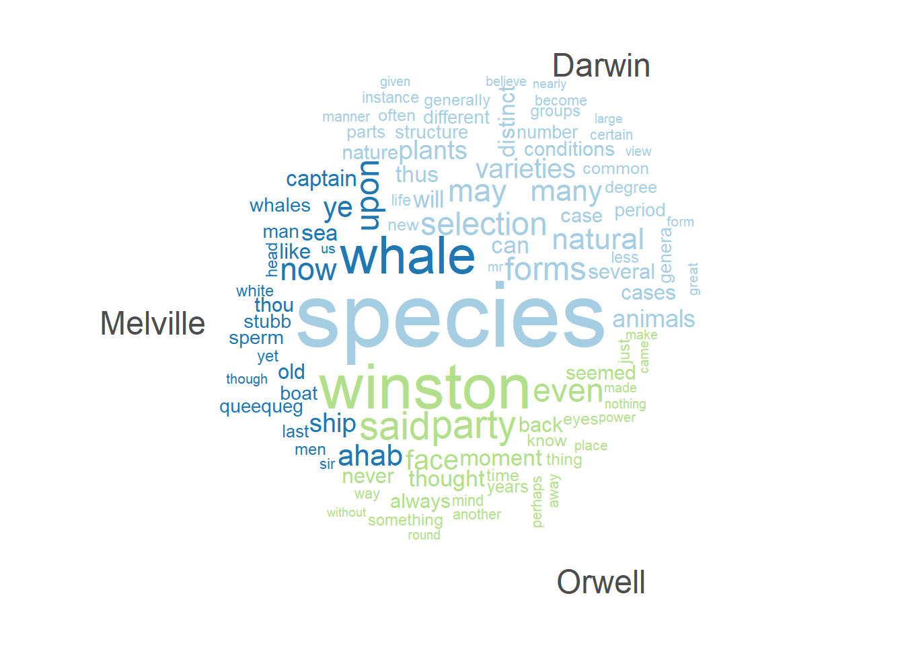
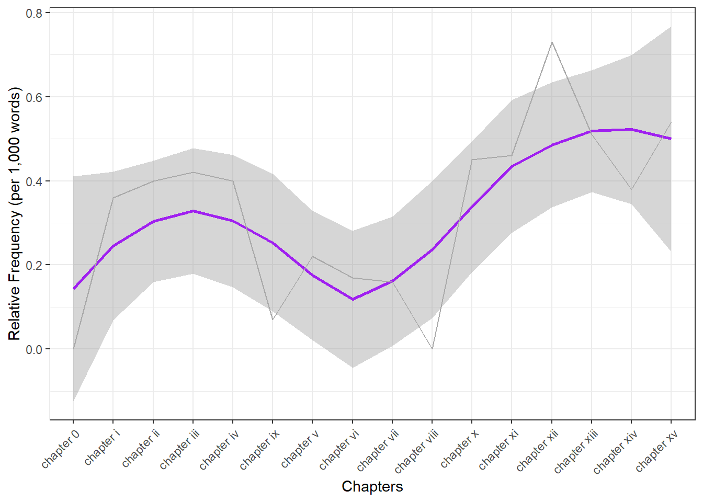
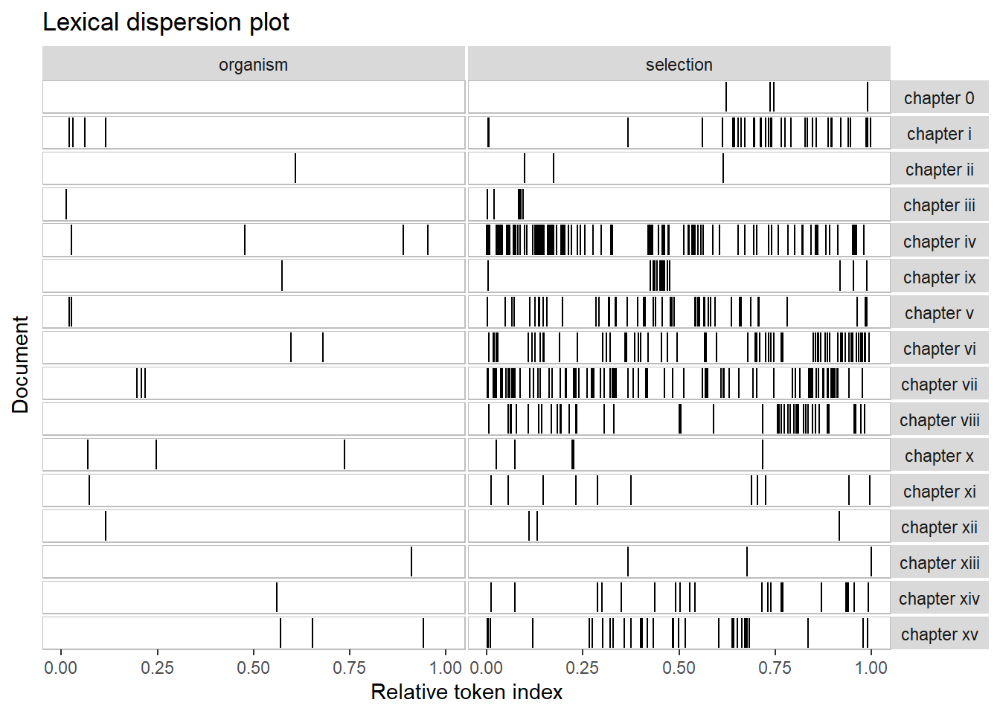
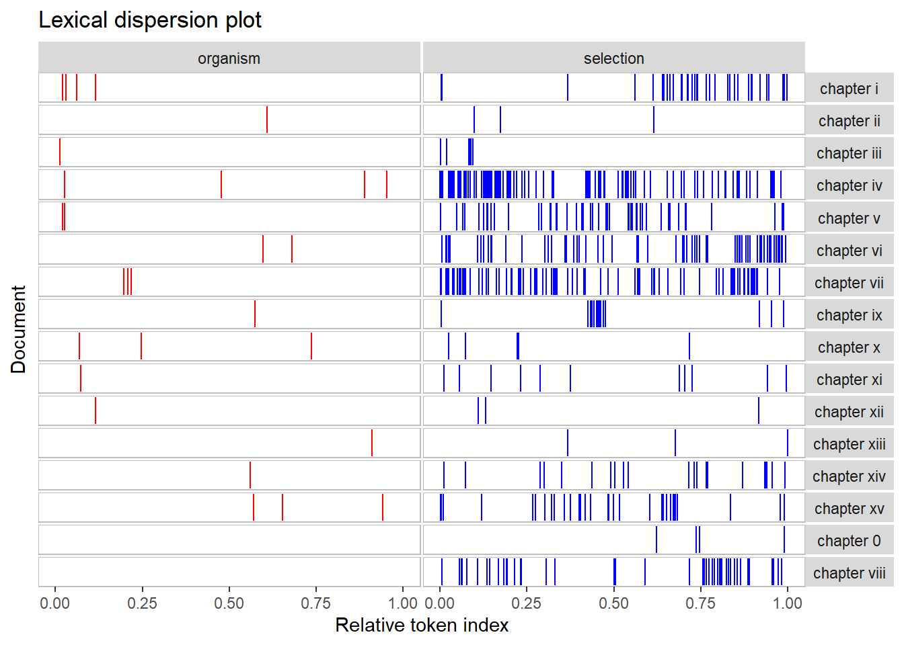
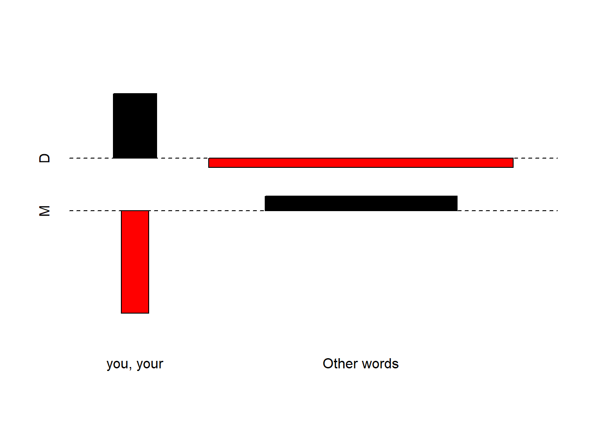
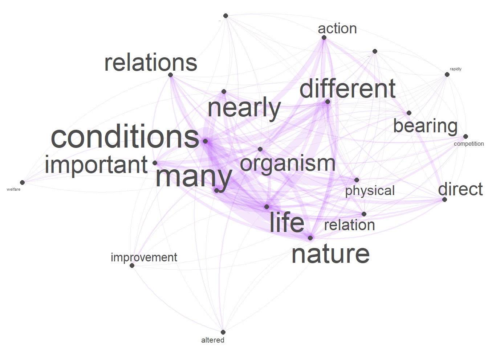
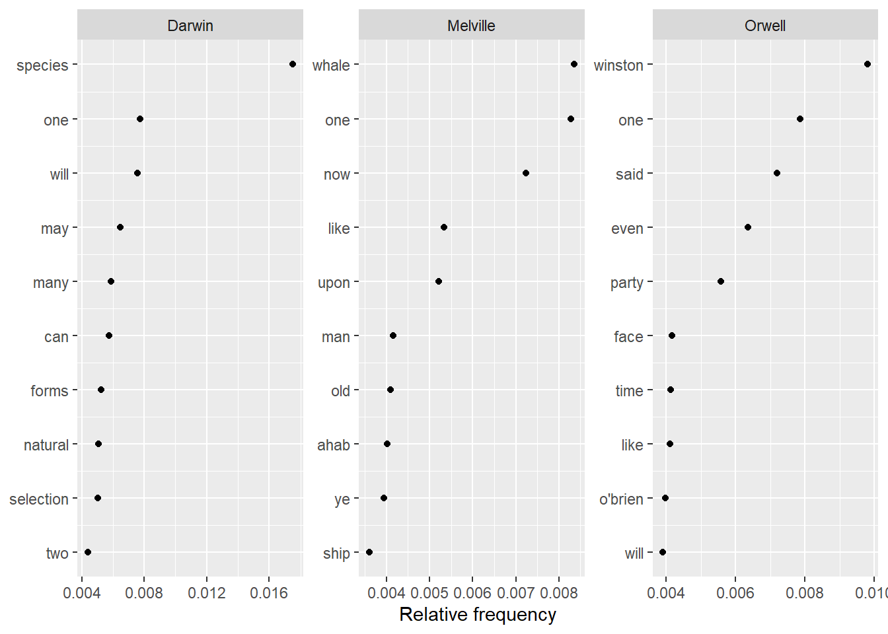
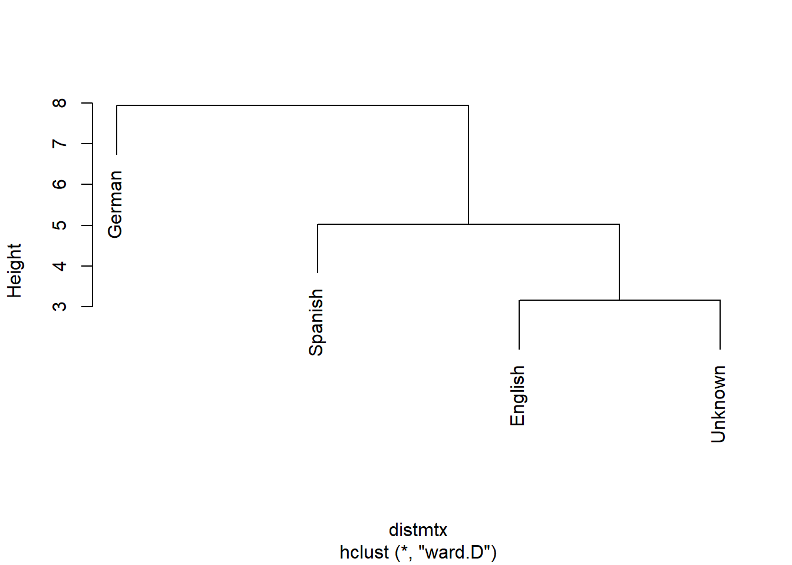
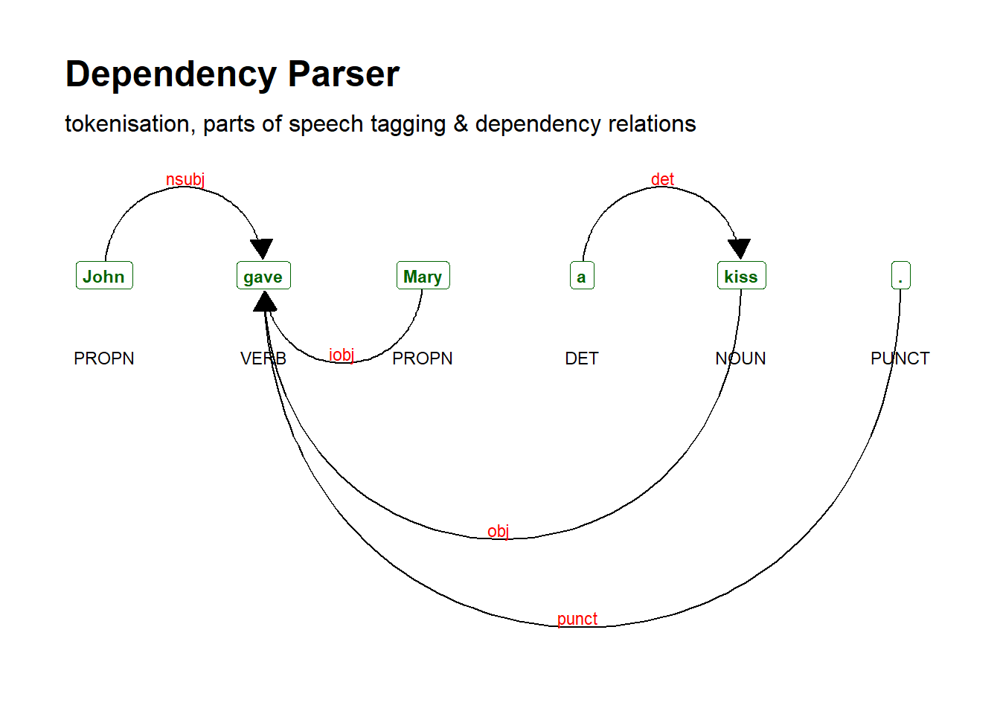

Practical Overview of Selected Text Analytics Methods
Martin Schweinberger
2022-05-24

Introduction

This tutorial introduces Text Analysis (see Bernard and Ryan 1998; Kabanoff 1997; Popping 2000), i.e. computer-based analysis of language data or the (semi-)automated extraction of information from text. This tutorial shows beginner and intermediate users of R how to perform basic text analytic procedures. The aim is not to provide a fully-fledged analysis but rather to show and exemplify selected useful methods associated with text analysis and distant reading.
The entire R Notebook for the tutorial can be downloaded here.
If you want to render the R Notebook on your machine, i.e. knitting the
document to html or a pdf, you need to make sure that you have R and
RStudio installed and you also need to download the bibliography
file and store it in the same folder where you store the
Rmd file.
Here
is a link to an interactive version of this tutorial on Google
Colab. The interactive tutorial is based on a Jupyter notebook
of this tutorial. This interactive Jupyter notebook allows you to
execute code yourself and - if you copy the Jupyter notebook - you can
also change and edit the notebook, e.g. you can change code and upload
your own data.
What is Text Analysis?
Since Text Analysis extracts and analyses information from language data, it can be considered a derivative of computational linguistics or an application of Natural Language Processing (NLP) to HASS research. As such, Text Analysis represents the application of computational methods in the humanities.
The advantages of Text Analysis include: * Extraction of information from large textual datasets * Replicability
Text Mining, Text Analytics, and Distant Reading are synonymous with Text Analysis. In some cases, Text Analysis is considered more qualitative while Text Analytics is considered to be quantitative. This distinction is not taken up here as Text Analysis, while allowing for qualitative analysis, builds upon quantitative information, i.e. information about frequencies or conditional probabilities.

Distant Reading is a cover term for applications of Text Analysis that allow to investigate literary and cultural trends by analysing large amounts of textual data. close reading refers to reading texts in the traditional sense. Text Analysis and distant reading are similar with respect to the methods that are used but with different outlooks. The outlook of distant reading is to extract information from text without close reading, i.e. reading the document(s) itself but rather focusing on emerging patterns in the language that is used.
Text Analysis or Distant Reading are rapidly gaining popularity in the humanities because textual data is readily available and because computational methods can be applied to a huge variety of research questions. The attractiveness of computational text analysis based on digitally available texts and in their capability to provide insights that cannot be derived from close reading techniques.

While rapidly growing as a valid approach to analyzing textual data, Text Analysis is critizised for lack of “quantitative rigor and because its findings are either banal or, if interesting, not statistically robust (see here. This criticism is correct in that most of the analysis that performed in Computational Literary Studies (CLS) are not yet as rigorous as analyses in fields that have a longer history of computational based, quantitative research, such as, for instance, corpus linguistics. However, the practices and methods used in CLS will be refined, adapted and show a rapid increase in quality if more research is devoted to these approaches. Text Analysis simply offers an alternative way to analyze texts that is not in competition to traditional techniques but rather complements them.
So far, most of the applications of Text Analysis are based upon a relatively limited number of key procedures or concepts (e.g. concordancing, word frequencies, annotation or tagging, parsing, collocation, text classification, Sentiment Analysis, Entity Extraction, Topic Modeling, etc.). In the following, we will explore these procedures and introduce some basic tools that help you perform the introduced tasks.
Preparation and session set up
This tutorial is based on R. If you have not installed R or are new to it, you will find an introduction to and more information how to use R here. For this tutorials, we need to install certain packages from an R library so that the scripts shown below are executed without errors. Before turning to the code below, please install the packages by running the code below this paragraph. If you have already installed the packages mentioned below, then you can skip ahead and ignore this section. To install the necessary packages, simply run the following code - it may take some time (between 1 and 5 minutes to install all of the packages so you do not need to worry if it takes some time).
# install packages
install.packages("quanteda")
install.packages("dplyr")
install.packages("stringr")
install.packages("ggplot2")
install.packages("tm")
install.packages("udpipe")
install.packages("tidytext")
install.packages("wordcloud2")
install.packages("quanteda.textstats")
install.packages("quanteda.textplots")
install.packages("flextable")
# install klippy for copy-to-clipboard button in code chunks
install.packages("remotes")
remotes::install_github("rlesur/klippy")Now that we have installed the packages, we can activate them as shown below.
# load packages
library(dplyr)
library(stringr)
library(ggplot2)
library(flextable)
library(quanteda)
library(tm)
library(udpipe)
library(tidytext)
library(wordcloud2)
library(flextable)
library(quanteda.textstats)
library(quanteda.textplots)
library(tidyr)
# activate klippy for copy-to-clipboard button
klippy::klippy()Once you have installed R and RStudio and once you have also initiated the session by executing the code shown above, you are good to go.
Concordancing
In Text Analysis, concordancing refers to the extraction of words from a given text or texts (Lindquist 2009). Commonly, concordances are displayed in the form of key-word in contexts (KWIC) where the search term is shown with some preceding and following context. Thus, such displays are referred to as key word in context concordances. A more elaborate tutorial on how to perform concordancing with R is available here.

Concordancing is helpful for seeing how the term is used in the data, for inspecting how often a given word occurs in a text or a collection of texts, for extracting examples, and it also represents a basic procedure and often the first step in more sophisticated analyses of language data.
In the following, we will use R to create KWICs displays of the term organism and the phrase natural selection using Charles Darwin’s On the origin of species by means of natural selection.
We begin by loading the data which represents the text of Charles Darwin’s On the Origin of Species. For the present tutorial, we load data that is available on the LADAL GitHUb repository. If you want to know how to load your own data, have a look at this tutorial.
# load text
darwin <- base::readRDS(url("https://slcladal.github.io/data/darwin.rda", "rb")). |
THE ORIGIN OF SPECIES |
BY |
CHARLES DARWIN |
AN HISTORICAL SKETCH |
OF THE PROGRESS OF OPINION ON |
THE ORIGIN OF SPECIES |
INTRODUCTION |
When on board H.M.S. 'Beagle,' as naturalist, I was much struck |
with certain facts in the distribution of the organic beings in- |
habiting South America, and in the geological relations of the |
The data still consists of short text snippets which is why we collapse these snippets and then split the collapsed data into chapters.
# combine and split into chapters
darwin_chapters <- darwin %>%
# paste all texts together into one long text
paste0(collapse = " ") %>%
# replace Chapter I to Chapter XVI with qwertz
stringr::str_replace_all("(CHAPTER [XVI]{1,7}\\.{0,1}) ", "qwertz\\1") %>%
# convert text to lower case
tolower() %>%
# split the long text into chapters
stringr::str_split("qwertz") %>%
# unlist the result (convert into simple vector)
unlist(). |
the origin of species by charles darwin an historical sketch of the progress of opinion on the origin of species introduction when on board h.m.s. 'beagle,' as naturalist, i was much struck with certain facts in the distribution of the organic beings in- habiting south america, and in the geological relations of the present to the past inhabitants of that continent. these facts, as will be seen in the latter chapters of this volume, seemed to throw some light on the origin of species |
chapter i variation under domestication causes of variability — effects of habit and the use or disuse of parts- correlated variation — inheritance — character of domestic varie- ties — difificulty of distinguishing between varieties and species — origin of domestic varieties from one or more species — domestic pigeons, their differences and origin — principles of selection, an- ciently followed, their efifects — methodical and unconscious selection — unknown origin of our domestic produc |
chapter ii variation under nature variability — individual differences — doubtful species — wide ranging, much diffused, and common species, vary most — species of the larger genera in each country vary more frequently than the species of the smaller genera — many of the species of the larger genera resemble varieties in being very closely, but unequally, related to each other, and in having restricted ranges. b efore applying the principles arrived at in the last chapter to organic bei |
chapter iii struggle for existence its bearing on natural selection — the term used in a wide sense — geometrical ratio of increase — rapid increase of naturalized animals and plants — nature of the checks to increase — competi- tion universal — effects of climate — protection from the number of individuals — complex relations of all animals and plants throughout nature — struggle for life most severe between indi- viduals and varieties of the same species : often severe between species |
chapter iv natural selection ; or the survival of the fittest natural selection — its power compared with man's selection — its power on characters of trifling importance — its power at all ages and on both sexes — sexual selection — on the generality of inter- crosses between individuals of the same species — circumstances favourable and unfavourable to the results of natural selection, namely, intercrossing, isolation, number of individuals — slow action — extinction caused by natural s |
Once we have split the data into chapters, we perform the
concordancing and extract the KWICs. To create these kwics, we use the
kwic function from the quanteda package. This
function takes the data (x), the search pattern (pattern), and the
window size as its main arguments.
To start with, we generate kwics for the term organism as shown below.
# create kwic
kwic_o <- quanteda::kwic(x = darwin_chapters, # define text(s)
# define pattern
pattern = "organism",
# define window size
window = 5) %>%
# convert into a data frame
as.data.frame() %>%
# remove superfluous columns
dplyr::select(-to, -from, -pattern)docname | pre | keyword | post |
text2 | on record of a variable | organism | ceasing to vary wnder cultivation |
text2 | , the nature of the | organism | , and the nature of |
text2 | of life on each individual | organism | , in nearly the same |
text2 | with the nature of the | organism | in determining each particular form |
text3 | of the nature of the | organism | and of the different physical |
text4 | genus - the relation of | organism | to organism the most important |
text4 | the relation of organism to | organism | the most important of all |
text5 | to the nature of the | organism | and the nature of the |
text5 | to the constitution of each | organism | . if we turn to |
text5 | as soon as simple unicellular | organism | came by growth or division |
We can also use regular expressions in our search to extract not only
organism but also organisms and organic. When
using a regular expression in the pattern argument, we need
to specify the valuetype as regex (as shown
below).
# create kwic
kwic_os <- quanteda::kwic(x = darwin_chapters,
pattern = "organi.*",
window = 5,
valuetype = "regex") %>%
# convert into a data frame
as.data.frame() %>%
# remove superfluous columns
dplyr::select(-to, -from, -pattern)docname | pre | keyword | post |
text2 | on record of a variable | organism | ceasing to vary wnder cultivation |
text2 | , the nature of the | organism | , and the nature of |
text2 | of life on each individual | organism | , in nearly the same |
text2 | with the nature of the | organism | in determining each particular form |
text3 | of the nature of the | organism | and of the different physical |
text4 | genus - the relation of | organism | to organism the most important |
text4 | the relation of organism to | organism | the most important of all |
text5 | to the nature of the | organism | and the nature of the |
text5 | to the constitution of each | organism | . if we turn to |
text5 | as soon as simple unicellular | organism | came by growth or division |
When search for expressions that represent phrase and that consists out of several elements such as natural selection, we also need to specify that we are looking for a phrase in the pattern argument.
# create kwic
kwic_ns <- quanteda::kwic(x = darwin_chapters,
pattern = quanteda::phrase("natural selection"),
window = 5) %>%
# convert into a data frame
as.data.frame() %>%
# remove superfluous columns
dplyr::select(-to, -from, -pattern)docname | pre | keyword | post |
text1 | . this fundamental subject of | natural selection | will be treated at some |
text1 | we shall then see how | natural selection | almost inevitably causes much extinction |
text1 | , i am convinced that | natural selection | has been the most important |
text2 | by a process of " | natural selection | , " as will hereafter |
text3 | they thus aft'ord materials for | natural selection | to act on and accumulate |
text3 | on and rendered definite by | natural selection | , as hereafter to be |
text3 | to the cumulative action of | natural selection | , hereafter to be explained |
text4 | for existence its bearing on | natural selection | - the term used in |
text4 | struggle for existence bears on | natural selection | . it has been seen |
text4 | preserved , by the term | natural selection | , in order to mark |
We could now continue and analyze how Darwin used the phrase natural selection or we could go about investigating how Darwin has used the term organism.
Word Frequency
Almost all methods used in text analytics rely on frequency information. Thus, fending out out frequent words are in a text is a fundamental technique in text analytics. In fact, frequency information lies at the very core of Text Analysis. Such frequency information often comes in the form of word frequency lists, i.e. lists of word forms and their frequency in a given text or collection of texts.
As extracting word frequency lists is very important, we will now We will now extract a frequency list from a corpus.
In a first step, we load a corpus, convert everything to lower case, remove non-word symbols (including punctuation), and split the corpus data into individual words.
# load and process corpus
darwin_words <- darwin %>%
# convert everything to lower case
tolower() %>%
# remove non-word characters
str_replace_all("[^[:alpha:][:space:]]*", "") %>%
tm::removePunctuation() %>%
stringr::str_squish() %>%
stringr::str_split(" ") %>%
unlist(). |
the |
origin |
of |
species |
by |
charles |
darwin |
an |
historical |
sketch |
of |
the |
progress |
of |
opinion |
Now that we have a vector of words, we can easily create a table representing a word frequency list (as shown below).
# create table
wfreq <- darwin_words %>%
table() %>%
as.data.frame() %>%
arrange(desc(Freq)) %>%
dplyr::rename(word = 1,
frequency = 2)word | frequency |
the | 13,498 |
of | 9,234 |
and | 5,548 |
in | 5,139 |
to | 4,539 |
a | 3,159 |
that | 2,661 |
as | 2,164 |
be | 2,143 |
have | 2,070 |
is | 1,994 |
species | 1,755 |
by | 1,672 |
which | 1,655 |
are | 1,553 |
The most frequent words are all function words which are often not meaningful or useful for an analysis. Thus, we now remove these function words (also called stopwords) from the frequency list and inspect the list without stopwords.
# create table wo stopwords
wfreq_wostop <- wfreq %>%
anti_join(stop_words, by = "word") %>%
dplyr::filter(word != "")word | frequency |
species | 1,755 |
forms | 524 |
natural | 513 |
selection | 505 |
varieties | 409 |
plants | 396 |
animals | 362 |
life | 330 |
distinct | 326 |
nature | 301 |
conditions | 268 |
structure | 249 |
period | 246 |
time | 240 |
common | 231 |
Such word frequency lists can be visualized in various ways. The most common way to visualize word frequency lists is in the form of bargraphs.
wfreq_wostop %>%
head(10) %>%
ggplot(aes(x = reorder(word, -frequency, mean), y = frequency)) +
geom_bar(stat = "identity") +
labs(title = "10 most frequent non-stop words in \nCharles Darwin's Origin of Species",
x = "") +
theme(axis.text.x = element_text(angle = 45, size = 12, hjust = 1))
Wordclouds
Alternatively, word frequency lists can be visualized, although less informative, as word clouds.
# create wordcloud
#wordcloud2(wfreq_wostop[1:100,],
# shape = "diamond",
# color = scales::viridis_pal()(8)
# )Another variant of word clouds, so-called comparison clouds, Word lists can be used to determine differences between texts. For instance, we can load different texts and check whether they differ with respect to word frequencies. To show this, we load Herman Melville’s Moby Dick, George Orwell’s 1984, and we also use Darwin’s Origin.
In a first step, we load these texts and collapse them into single documents.
# load data
orwell_sep <- base::readRDS(url("https://slcladal.github.io/data/orwell.rda", "rb"))
orwell <- orwell_sep %>%
paste0(collapse = " ")
melville_sep <- base::readRDS(url("https://slcladal.github.io/data/melville.rda", "rb"))
melville <- melville_sep %>%
paste0(collapse = " ")
darwin_sep <- darwin
darwin <- paste0(darwin_sep, collapse = " ")Now, we generate a corpus object from these texts and create a variable with the author name.
corp_dom <- quanteda::corpus(c(darwin, orwell, melville))
attr(corp_dom, "docvars")$Author = c("Darwin", "Orwell", "Melville")Now, we can remove so-called stopwords (non-lexical function words) and punctuation and generate the comparison cloud.
corp_dom %>%
quanteda::tokens(remove_punct = TRUE) %>%
quanteda::tokens_remove(stopwords("english")) %>%
quanteda::dfm() %>%
quanteda::dfm_group(groups = corp_dom$Author) %>%
quanteda::dfm_trim(min_termfreq = 200, verbose = FALSE) %>%
quanteda.textplots::textplot_wordcloud(comparison = TRUE,
max_words = 100,
max_size = 6)
Frequency changes
We can also investigate the use of the term organism across chapters in Darwin’s Origin. In a first step, we extract the number of words in each chapter.
# extract number of words per chapter
Words <- darwin_chapters %>%
stringr::str_split(" ") %>%
lengths()
# inspect data
Words## [1] 1856 14065 7456 7136 22317 13916 17781 19055 15847 14741 13313 12996
## [13] 13753 9817 20967 12987Next, we extract the number of matches in each chapter.
# extract number of matches per chapter
Matches <- darwin_chapters %>%
stringr::str_count("organism[s]{0,1}")
# inspect the number of matches per chapter
Matches## [1] 0 5 3 3 9 3 3 3 0 1 6 6 10 5 8 7Now, we extract the names of the chapters and create a table with the chapter names and the relative frequency of matches per 1,000 words.
# extract chapters
Chapters <- darwin_chapters %>%
stringr::str_replace_all("(chapter [xvi]{1,7})\\.{0,1} .*", "\\1")
Chapters <- dplyr::case_when(nchar(Chapters) > 50 ~ "chapter 0", TRUE ~ Chapters)
Chapters## [1] "chapter 0" "chapter i" "chapter ii" "chapter iii" "chapter iv"
## [6] "chapter v" "chapter vi" "chapter vii" "chapter viii" "chapter ix"
## [11] "chapter x" "chapter xi" "chapter xii" "chapter xiii" "chapter xiv"
## [16] "chapter xv"# create table of results
tb <- data.frame(Chapters, Matches, Words) %>%
dplyr::mutate(Frequency = round(Matches/Words*1000, 2))Chapters | Matches | Words | Frequency |
chapter 0 | 0 | 1,856 | 0.00 |
chapter i | 5 | 14,065 | 0.36 |
chapter ii | 3 | 7,456 | 0.40 |
chapter iii | 3 | 7,136 | 0.42 |
chapter iv | 9 | 22,317 | 0.40 |
chapter v | 3 | 13,916 | 0.22 |
chapter vi | 3 | 17,781 | 0.17 |
chapter vii | 3 | 19,055 | 0.16 |
chapter viii | 0 | 15,847 | 0.00 |
chapter ix | 1 | 14,741 | 0.07 |
chapter x | 6 | 13,313 | 0.45 |
chapter xi | 6 | 12,996 | 0.46 |
chapter xii | 10 | 13,753 | 0.73 |
chapter xiii | 5 | 9,817 | 0.51 |
chapter xiv | 8 | 20,967 | 0.38 |
We can now visualize the relative frequencies of our search word per chapter.
# create plot
ggplot(tb, aes(x = Chapters, y = Frequency, group = 1)) +
geom_smooth(color = "purple") +
geom_line(color = "darkgray") +
guides(color=guide_legend(override.aes=list(fill=NA))) +
theme_bw() +
theme(axis.text.x = element_text(angle = 45, hjust = 1))+
scale_y_continuous(name ="Relative Frequency (per 1,000 words)")
Dispersion plots
To show when in a text or in a collection of texts certain terms
occur, we can use dispersion plots. The quanteda
package offers a very easy-to-use function textplot_xray to
generate dispersion plots.
# add chapter names
names(darwin_chapters) <- Chapters
# generate corpus from chapters
darwin_corpus <- quanteda::corpus(darwin_chapters)
# generate dispersion plots
quanteda.textplots::textplot_xray(kwic(darwin_corpus, pattern = "organism"),
kwic(darwin_corpus, pattern = "selection"),
sort = T)
We can modify the plot by saving it into an object and then use
ggplot to modify it appearance.
# generate and save dispersion plots
dp <- quanteda.textplots::textplot_xray(kwic(darwin_corpus, pattern = "organism"),
kwic(darwin_corpus, pattern = "selection"))
# modify plot
dp + aes(color = keyword) +
scale_color_manual(values = c('red', 'blue')) +
theme(legend.position = "none")
Over- and underuse
Frequency information can also tell us something about the nature of a text. For instance, private dialogues will typically contain higher rates of second person pronouns compared with more format text types, such as, for instance, scripted monologues like speeches. For this reason, word frequency lists can be used in text classification and to determine the formality of texts.
As an example, below you find the number of the second person pronouns you and your and the number of all words except for these second person pronouns in private dialogues compared with scripted monologues in the Irish component of the International Corpus of English (ICE). In addition, the tables shows the percentage of second person pronouns in both text types to enable seeing whether private dialogues contain more of these second person pronouns than scripted monologues (i.e. speeches).
. | Private dialogues | Scripted monologues |
you, your | 6761 | 659 |
Other words | 259625 | 105295 |
Percent | 2.60 | 0.63 |
This simple example shows that second person pronouns make up 2.6 percent of all words that are used in private dialogues while they only amount to 0.63 percent in scripted speeches. A handy way to present such differences visually are association and mosaic plots.
d <- matrix(c(6761, 659, 259625, 105295), nrow = 2, byrow = T)
colnames(d) <- c("D", "M")
rownames(d) <- c("you, your", "Other words")
assocplot(d)
Bars above the dashed line indicate relative overuse while bars below the line suggest relative under-use. Therefore, the association plot indicates under-use of you and your and overuse of other words in monologues while the opposite trends holds true for dialogues, i.e. overuse of you and your and under-use of Other words.
N-grams, Collocations, and Keyness
Collocation refers to the co-occurrence of words. A typical example of a collocation is Merry Christmas because the words merry and Christmas occur together more frequently together than would be expected by chance, if words were just randomly stringed together.
N-grams are related to collocates in that they represent words that occur together (bi-grams are two words that occur together, tri-grams three words and so on). Fortunately, creating N-gram lists is very easy. We will use the Origin to create a bi-gram list. We can simply take each word and combine it with the following word.
# create data frame
darwin_bigrams <- data.frame(darwin_words[1:length(darwin_words)-1],
darwin_words[2:length(darwin_words)]) %>%
dplyr::rename(Word1 = 1,
Word2 = 2) %>%
dplyr::mutate(Bigram = paste0(Word1, " ", Word2)) %>%
dplyr::group_by(Bigram) %>%
dplyr::summarise(Frequency = n()) %>%
dplyr::arrange(-Frequency)Bigram | Frequency |
of the | 2,673 |
in the | 1,440 |
the same | 959 |
to the | 791 |
on the | 744 |
have been | 624 |
that the | 574 |
it is | 500 |
natural selection | 367 |
and the | 351 |
from the | 346 |
in a | 339 |
of a | 337 |
with the | 336 |
to be | 329 |
Both N-grams and collocations are not only an important concept in language teaching but they are also fundamental in Text Analysis and many other research areas working with language data. Unfortunately, words that collocate do not have to be immediately adjacent but can also encompass several slots which makes it harder to retrieve of collocates that are not adjacent- We will find out how to identify non-adjacent collocates in the next section.
Finding collocations
There are various techniques for identifying collocations. To
identify collocations without having a pre-defined target term, we can
use the textstat_collocations function from the
quanteda.textstats package.
However, before we can apply that function and start identifying collocations, we need to process the data to which we want to apply this function. In the present case, we will apply that function to the sentences in Charles Darwin’s Origin which we extract in the code chunk below.
darwin_sentences <- darwin %>%
tolower() %>%
paste0(collapse= " ") %>%
stringr::str_split(fixed(".")) %>%
unlist() %>%
tm::removePunctuation() %>%
stringr::str_squish(). |
the origin of species by charles darwin an historical sketch of the progress of opinion on the origin of species introduction when on board h |
m |
s |
beagle as naturalist i was much struck with certain facts in the distribution of the organic beings in habiting south america and in the geological relations of the present to the past inhabitants of that continent |
these facts as will be seen in the latter chapters of this volume seemed to throw some light on the origin of species — that mystery of mysteries as it has been called by one of our greatest philosophers |
on my return home it occurred to me in 1837 that something might perhaps be made out on this question by patiently accumulating and reflecting on all sorts of facts which could possibly have any bearing on it |
after five years work i allowed myself to specu late on the subject and drew up some short notes these i enlarged in 1844 into a sketch of the conclusions which then seemed to me probable from that period to the present day i have steadily pursued the same object |
i hope that i may be excused for entering on these personal details as i give them to show that i have not been hasty in coming to a decision |
my work is now 1859 nearly finished but as it will take me many more years to complete it and as my health is far from strong i have been urged to publish this abstract |
i have more especially been induced to do this as mr |
wallace who is now studying the natural history of the malay archipelago has arrived at almost exactly the same general conclusions that i have on the origin of species |
in 1858 he sent me a memoir on this subject with a request that i would forward it to sir charles lyell who sent it to the linnean society and it is published in the third volume of the journal of that society |
sir c |
lyell and dr |
hooker who both knew of my work— the latter having read my sketch of 1844 — honoured me by thinking it advisable to publish with mr |
From the output shown above, we also see that splitting texts simply by full stops is not optimal as it produces some unwarranted artifacts like the “sentences” that consist of single characters (due to the name of the H.M.S. Beagle - the ship on which Darwin traveled when he explored the southern hemisphere). Fortunately, these errors do not really matter in the case of our example.
Now that we have split Darwin’s Origin into sentences, we
can tokenize these sentences and apply the
textstat_collocations function which identifies
collocations.
# create a token object
darwin_tokens <- tokens(darwin_sentences, remove_punct = TRUE) %>%
tokens_remove(stopwords("english"))
# extract collocations
darwin_coll <- textstat_collocations(darwin_tokens, size = 2, min_count = 20)collocation | count | count_nested | length | lambda | z |
natural selection | 367 | 0 | 2 | 7.442662 | 57.36943 |
conditions life | 107 | 0 | 2 | 5.807671 | 39.91801 |
organic beings | 105 | 0 | 2 | 8.179323 | 37.34842 |
closely allied | 64 | 0 | 2 | 6.561562 | 33.85212 |
south america | 41 | 0 | 2 | 7.415450 | 28.81440 |
widely different | 49 | 0 | 2 | 5.317774 | 28.29759 |
modified descendants | 40 | 0 | 2 | 6.092974 | 27.68700 |
state nature | 45 | 0 | 2 | 5.331289 | 27.38031 |
theory natural | 54 | 0 | 2 | 4.864304 | 27.35902 |
distinct species | 102 | 0 | 2 | 3.307347 | 26.97796 |
north america | 31 | 0 | 2 | 7.091204 | 26.01263 |
forms life | 57 | 0 | 2 | 3.844558 | 25.11312 |
struggle existence | 27 | 0 | 2 | 6.889213 | 25.08157 |
individual differences | 30 | 0 | 2 | 5.922674 | 24.97534 |
united states | 29 | 0 | 2 | 8.330146 | 24.94125 |
The resulting table shows collocations in Darwin’s Origin descending by collocation strength.
Visualizing Collocation Networks
Network graphs are a very useful and flexible tool for visualizing
relationships between elements such as words, personas, or authors. This
section shows how to generate a network graph for collocations of the
term organism using the quanteda package.
In a first step, we generate a document-feature matrix based on the sentence sin Charles Darwin’s Origin. A document-feature matrix shows how often elements (here these elements are the words that occur in the Origin) occur in a selection of documents (here these documents are the sentences in the Origin).
# create document-feature matrix
darwin_dfm <- darwin_sentences %>%
quanteda::dfm(remove = stopwords('english'), remove_punct = TRUE) %>%
quanteda::dfm_trim(min_termfreq = 10, verbose = FALSE)doc_id | origin | species | charles | progress | opinion | h |
text1 | 2 | 2 | 1 | 1 | 1 | 1 |
text2 | 0 | 0 | 0 | 0 | 0 | 0 |
text3 | 0 | 0 | 0 | 0 | 0 | 0 |
text4 | 0 | 0 | 0 | 0 | 0 | 0 |
text5 | 1 | 1 | 0 | 0 | 0 | 0 |
text6 | 0 | 0 | 0 | 0 | 0 | 0 |
As we want to generate a network graph of words that collocate with
the term organism, we use the
calculateCoocStatistics function to determine which words
most strongly collocate with our target term (organism).
# load function for co-occurrence calculation
source("https://slcladal.github.io/rscripts/calculateCoocStatistics.R")
# define term
coocTerm <- "organism"
# calculate co-occurrence statistics
coocs <- calculateCoocStatistics(coocTerm, darwin_dfm, measure="LOGLIK")
# inspect results
coocs[1:20]## conditions nature relation relations physical action
## 56.666499 34.485146 25.478537 22.836815 21.740633 20.608922
## life bearing important many direct colonists
## 18.807464 16.246065 15.812686 13.488588 12.705077 11.300306
## competition nearly welfare require altered different
## 11.140540 10.945131 10.886868 10.514045 10.174698 9.774481
## improvement rapidly
## 9.576033 9.576033We now reduce the document-feature matrix to contain only the top 20 collocates of organism (plus our target word organism).
redux_dfm <- dfm_select(darwin_dfm,
pattern = c(names(coocs)[1:20], "organism"))doc_id | relations | bearing | nearly | many | conditions | important |
text1 | 0 | 0 | 0 | 0 | 0 | 0 |
text2 | 0 | 0 | 0 | 0 | 0 | 0 |
text3 | 0 | 0 | 0 | 0 | 0 | 0 |
text4 | 1 | 0 | 0 | 0 | 0 | 0 |
text5 | 0 | 0 | 0 | 0 | 0 | 0 |
text6 | 0 | 1 | 0 | 0 | 0 | 0 |
Now, we can transform the document-feature matrix into a feature-co-occurrence matrix as shown below. A feature-co-occurrence matrix shows how often each element in that matrix co-occurs with every other element in that matrix.
tag_fcm <- fcm(redux_dfm)doc_id | relations | bearing | nearly | many | conditions | important |
relations | 3 | 2 | 2 | 6 | 11 | 6 |
bearing | 0 | 1 | 1 | 3 | 2 | 1 |
nearly | 0 | 0 | 7 | 23 | 29 | 7 |
many | 0 | 0 | 0 | 51 | 34 | 27 |
conditions | 0 | 0 | 0 | 0 | 27 | 18 |
important | 0 | 0 | 0 | 0 | 0 | 9 |
Using the feature-co-occurrence matrix, we can generate the network
graph which shows the terms that collocate with the target term
organism with the edges representing the co-occurrence
frequency. To generate this network graph, we use the
textplot_network function from the
quanteda.textplots package.
# generate network graph
textplot_network(tag_fcm,
min_freq = 1,
edge_alpha = 0.1,
edge_size = 5,
edge_color = "purple",
vertex_labelsize = log(rowSums(tag_fcm))*2)
Keyness
Another common method that can be used for automated text summarization is keyword extraction. Keyword extraction builds on identifying words that are particularly associated with a certain text. In other words, keyness analysis aims to identify words that are particularly indicative of the content of a certain text.
Below, we identify key words for Charles Darwin’s Origin, Herman Melville’s Moby Dick, and George Orwell’s 1984. We start by creating a weighted document feature matrix from the corpus containing the three texts.
In order to create a corpus, we use the text objects that consist out of many different elements rather than the objects which contained the collapsed texts that we used above. Thus, in a first step, we create a corpus of the texts.
corp_dom <- quanteda::corpus(c(darwin_sep, orwell_sep, melville_sep))
attr(corp_dom, "docvars")$Author = c(rep("Darwin", length(darwin_sep)),
rep("Orwell", length(orwell_sep)),
rep("Melville", length(melville_sep)))Next, we generate the document feature matrix and we clean it by removing stopwords and selected other words. In addition, we group the documents feature matrix by author.
dfm_authors <- corp_dom %>%
quanteda::tokens(remove_punct = TRUE) %>%
quanteda::tokens_remove(quanteda::stopwords("english")) %>%
quanteda::tokens_remove(c("now", "one", "like", "may", "can")) %>%
quanteda::dfm() %>%
quanteda::dfm_group(groups = Author) %>%
quanteda::dfm_weight(scheme = "prop")In a next step, we use the textstat_frequency function
from the quanteda package to extract the most frequent
non-stopwords in the three texts.
# Calculate relative frequency by president
freq_weight <- quanteda.textstats::textstat_frequency(dfm_authors,
n = 10,
groups = dfm_authors$Author)feature | frequency | rank | docfreq | group |
species | 0.018084394 | 1 | 1 | Darwin |
many | 0.006059045 | 2 | 1 | Darwin |
forms | 0.005399557 | 3 | 1 | Darwin |
natural | 0.005244989 | 4 | 1 | Darwin |
selection | 0.005203771 | 5 | 1 | Darwin |
two | 0.004533979 | 6 | 1 | Darwin |
varieties | 0.004214540 | 7 | 1 | Darwin |
plants | 0.004029059 | 8 | 1 | Darwin |
thus | 0.003926014 | 9 | 1 | Darwin |
animals | 0.003689010 | 10 | 1 | Darwin |
whale | 0.008602501 | 1 | 1 | Melville |
upon | 0.005370569 | 2 | 1 | Melville |
man | 0.004277275 | 3 | 1 | Melville |
old | 0.004210143 | 4 | 1 | Melville |
ahab | 0.004133420 | 5 | 1 | Melville |
Now, we can simply plot the most common words and most indicative non-stop words in the three texts.
ggplot(freq_weight, aes(nrow(freq_weight):1, frequency)) +
geom_point() +
facet_wrap(~ group, scales = "free") +
coord_flip() +
scale_x_continuous(breaks = nrow(freq_weight):1,
labels = freq_weight$feature) +
labs(x = NULL, y = "Relative frequency")
Text Classification
Text classification refers to methods that allow to classify a given text to a predefined set of languages, genres, authors, or the like. Such classifications are typically based on the relative frequency of word classes, key words, phonemes, or other linguistic features such as average sentence length, words per line, etc.
As with most other methods that are used in text analysis, text classification typically builds upon a training set that is already annotated with the required tags. Training sets and the features that are derived from these training sets can be created by oneself or one can use build in training sets that are provided in the respective software packages or tools.
In the following, we will use the frequency of phonemes to classify a text. In a first step, we read in a German text, and split it into phonemes.
# read in German text
German <- readLines("https://slcladal.github.io/data/phonemictext1.txt") %>%
stringr::str_remove_all(" ") %>%
stringr::str_split("") %>%
unlist()
# inspect data
head(German, 20)## [1] "?" "a" "l" "s" "h" "E" "s" "@" "d" "e" ":" "n" "S" "t" "E" "p" "@" "n" "v"
## [20] "O"We now do the same for three other texts - an English and a Spanish text as well as one text in a language that we will determine using classification.
# read in texts
English <- readLines("https://slcladal.github.io/data/phonemictext2.txt")
Spanish <- readLines("https://slcladal.github.io/data/phonemictext3.txt")
Unknown <- readLines("https://slcladal.github.io/data/phonemictext4.txt")
# clean, split texts into phonemes, unlist and convert them into vectors
English <- as.vector(unlist(strsplit(gsub(" ", "", English), "")))
Spanish <- as.vector(unlist(strsplit(gsub(" ", "", Spanish), "")))
Unknown <- as.vector(unlist(strsplit(gsub(" ", "", Unknown), "")))
# inspect data
head(English, 20)## [1] "D" "@" "b" "U" "k" "I" "z" "p" "r" "\\" "@" "z" "E" "n" "t"
## [16] "@" "d" "{" "z" "@"We will now create a table that represents the phonemes and their frequencies in each of the 4 texts. In addition, we will add the language and simply the column names.
# create data tables
German <- data.frame(names(table(German)), as.vector(table(German)))
English <- data.frame(names(table(English)), as.vector(table(English)))
Spanish <- data.frame(names(table(Spanish)), as.vector(table(Spanish)))
Unknown <- data.frame(names(table(Unknown)), as.vector(table(Unknown)))
# add column with language
German$Language <- "German"
English$Language <- "English"
Spanish$Language <- "Spanish"
Unknown$Language <- "Unknown"
# simplify column names
colnames(German)[1:2] <- c("Phoneme", "Frequency")
colnames(English)[1:2] <- c("Phoneme", "Frequency")
colnames(Spanish)[1:2] <- c("Phoneme", "Frequency")
colnames(Unknown)[1:2] <- c("Phoneme", "Frequency")
# combine all tables into a single table
classdata <- rbind(German, English, Spanish, Unknown) Phoneme | Frequency | Language |
- | 6 | German |
: | 569 | German |
? | 556 | German |
@ | 565 | German |
2 | 6 | German |
3 | 31 | German |
4 | 67 | German |
5 | 1 | German |
6 | 402 | German |
8 | 32 | German |
Now, we group the data so that we see, how often each phoneme is used in each language.
# convert into wide format
classdw <- classdata %>%
tidyr::spread(Phoneme, Frequency) %>%
replace(is.na(.), 0)Language | ' | - | : | ? | @ |
English | 7 | 8 | 176 | 0 | 309 |
German | 0 | 6 | 569 | 556 | 565 |
Spanish | 0 | 5 | 0 | 0 | 0 |
Unknown | 12 | 12 | 286 | 0 | 468 |
Now, we need to transform the data again, so that we have the frequency of each phoneme by language as the classifier will use “Language” as the dependent variable and the phoneme frequencies as predictors.
numvar <- colnames(classdw)[2:length(colnames(classdw))]
classdw[numvar] <- lapply(classdw[numvar], as.numeric)
# function for normalizing numeric variables
normalize <- function(x) { (x-min(x))/(max(x)-min(x)) }
# apply normalization
classdw[numvar] <- as.data.frame(lapply(classdw[numvar], normalize))Language | ' | - | : | ? | @ |
English | 0.5833333 | 0.4285714 | 0.3093146 | 0 | 0.5469027 |
German | 0.0000000 | 0.1428571 | 1.0000000 | 1 | 1.0000000 |
Spanish | 0.0000000 | 0.0000000 | 0.0000000 | 0 | 0.0000000 |
Unknown | 1.0000000 | 1.0000000 | 0.5026362 | 0 | 0.8283186 |
Before turning to the actual classification, we will use a cluster analysis to see which texts the unknown text is most similar with.
# remove language column
textm <- classdw[,2:ncol(classdw)]
# add languages as row names
rownames(textm) <- classdw[,1]
# create distance matrix
distmtx <- dist(textm)
# perform clustering
clustertexts <- hclust(distmtx, method="ward.D")
# visualize cluster result
plot(clustertexts, hang = .25,main = "") 
According to the cluster analysis, the unknown text clusters together with the English texts which suggests that the unknown text is likely to be English.
Before we begin with the actual classification, we will split the data so that we have one data set without “Unknown” (this is our training set) and one data set with only “Unknown” (this is our test set).
# create training set
train <- classdw %>%
filter(Language != "Unknown")
# create test set
test <- classdw %>%
filter(Language == "Unknown")Language | ' | - | : | ? | @ |
English | 0.5833333 | 0.4285714 | 0.3093146 | 0 | 0.5469027 |
German | 0.0000000 | 0.1428571 | 1.0000000 | 1 | 1.0000000 |
Spanish | 0.0000000 | 0.0000000 | 0.0000000 | 0 | 0.0000000 |
Unknown | 1.0000000 | 1.0000000 | 0.5026362 | 0 | 0.8283186 |
Finally, we can apply our classifier to our data. The classifier we use is a k-nearest neighbor classifier as the underlying function will classify an unknown element given its proximity to the clusters in the training set.
# set seed for reproducibility
set.seed(12345)
# apply k-nearest-neighbor (knn) classifier
prediction <- class::knn(train[,2:ncol(train)],
test[,2:ncol(test)],
cl = train[, 1],
k = 3)
# inspect the result
prediction## [1] English
## Levels: English German SpanishBased on the frequencies of phonemes in the unknown text, the knn-classifier predicts that the unknown text is English. This is in fact true as the text is a subsection of the Wikipedia article for Aldous Huxley’s Brave New World. The training texts were German, English, and Spanish translations of a subsection of Wikipedia’s article for Hermann Hesse’s Steppenwolf.
Part-of-Speech tagging
A very common procedure to add information to texts is to part-of-speech tag the data, which means to determine to what type of word a specific word belongs. Below, we will add pos-tags to a short English text.
We start by loading a text
# load text
text <- base::readRDS(url("https://slcladal.github.io/data/orwell.rda", "rb")) %>%
.[1:10] %>%
paste0(collapse = " ")
# inspect
substr(text, 1, 200)## [1] "1984 George Orwell Part 1, Chapter 1 It was a bright cold day in April, and the clocks were striking thirteen. Winston Smith, his chin nuzzled into his breast in an effort to escape the vile wind, sli"Now that we have a text that we can work with, we will download a pre-trained language model.
# download language model
m_eng <- udpipe::udpipe_download_model(language = "english-ewt")If you have downloaded a model once, you can also load the model directly from the place where you stored it on your computer. In my case, I have stored the model in a folder called udpipemodels
# load language model from your computer after you have downloaded it once
m_eng <- udpipe_load_model(file = here::here("udpipemodels", "english-ewt-ud-2.5-191206.udpipe"))We can now use the model to annotate out text.
# tokenise, tag, dependency parsing
text_anndf <- udpipe::udpipe_annotate(m_eng, x = text) %>%
as.data.frame() %>%
dplyr::select(-sentence)
# inspect
head(text_anndf, 10)## doc_id paragraph_id sentence_id token_id token lemma upos xpos
## 1 doc1 1 1 1 1984 1984 PROPN NNP
## 2 doc1 1 1 2 George George PROPN NNP
## 3 doc1 1 1 3 Orwell Orwell PROPN NNP
## 4 doc1 1 1 4 Part part PROPN NNP
## 5 doc1 1 1 5 1 1 NUM CD
## 6 doc1 1 1 6 , , PUNCT ,
## 7 doc1 1 1 7 Chapter chapter PROPN NNP
## 8 doc1 1 1 8 1 1 NUM CD
## 9 doc1 1 2 1 It it PRON PRP
## 10 doc1 1 2 2 was be AUX VBD
## feats head_token_id
## 1 Number=Sing 2
## 2 Number=Sing 0
## 3 Number=Sing 2
## 4 Number=Sing 2
## 5 NumType=Card 2
## 6 <NA> 2
## 7 Number=Sing 2
## 8 NumType=Card 7
## 9 Case=Nom|Gender=Neut|Number=Sing|Person=3|PronType=Prs 6
## 10 Mood=Ind|Number=Sing|Person=3|Tense=Past|VerbForm=Fin 6
## dep_rel deps misc
## 1 compound <NA> <NA>
## 2 root <NA> <NA>
## 3 flat <NA> <NA>
## 4 flat <NA> <NA>
## 5 list <NA> SpaceAfter=No
## 6 punct <NA> <NA>
## 7 appos <NA> <NA>
## 8 nummod <NA> <NA>
## 9 nsubj <NA> <NA>
## 10 cop <NA> <NA>It can be useful to extract only the words and their pos-tags and convert them back into a text format (rather than a tabular format).
tagged_text <- paste(text_anndf$token, "/", text_anndf$xpos, collapse = " ", sep = "")
# inspect tagged text
substr(tagged_text, 1, 200)## [1] "1984/NNP George/NNP Orwell/NNP Part/NNP 1/CD ,/, Chapter/NNP 1/CD It/PRP was/VBD a/DT bright/JJ cold/JJ day/NN in/IN April/NNP ,/, and/CC the/DT clocks/NNS were/VBD striking/VBG thirteen/RB ./. Winsto"We could use the pos-tagged data to study differences in the distribution of word classes across different registers. or to find certain syntactic patterns in a collection of texts.
Names Entity Recognition
Named Entity Recognition (NER) (also referred to as named entity extraction or simply as entity extraction) is a text analytic method which allows us to automatically identify or extract named entities from text(s) such as persons, locations, brands, etc.
As such, NER is a process during which textual elements which have characteristics that are common to proper nouns (locations, people, organizations, etc.) rather than other parts of speech, e.g. non-sentence initial capitalization, are extracted from texts. Retrieving entities is common in automated summarization and in Topic Modeling. NER can be achieved by simple feature extraction (e.g. extract all non-sentence initial capitalized words) or with the help of training sets. Using training sets, i.e. texts that are annotated for entities and non-entities, achieves better results when dealing with unknown data and data with inconsistent capitalization.
Here, we will make use of the results obtained form the pos-tagging and simply extract terms that have been tagged as
# tokenise, tag, dependency parsing
ner_df <- text_anndf %>%
dplyr::filter(upos == "PROPN") %>%
dplyr::select(token_id, token, lemma, upos, feats)
# inspect
head(ner_df)## token_id token lemma upos feats
## 1 1 1984 1984 PROPN Number=Sing
## 2 2 George George PROPN Number=Sing
## 3 3 Orwell Orwell PROPN Number=Sing
## 4 4 Part part PROPN Number=Sing
## 5 7 Chapter chapter PROPN Number=Sing
## 6 8 April April PROPN Number=SingThe results would now have to be processed further and could be categorized into person, location, dates, entities, for example. However, this should already give you an idea and get you started.
Dependency Parsing Using UDPipe
In addition to pos-tagging, we can also generate plots showing the
syntactic dependencies of the different constituents of a sentence. For
this, we generate an object that contains a sentence (in this case, the
sentence John gave Mary a kiss), and we then plot (or
visualize) the dependencies using the
textplot_dependencyparser function.
# parse text
sent <- udpipe::udpipe_annotate(m_eng, x = "John gave Mary a kiss.") %>%
as.data.frame()
# inspect
head(sent)## doc_id paragraph_id sentence_id sentence token_id token lemma
## 1 doc1 1 1 John gave Mary a kiss. 1 John John
## 2 doc1 1 1 John gave Mary a kiss. 2 gave give
## 3 doc1 1 1 John gave Mary a kiss. 3 Mary Mary
## 4 doc1 1 1 John gave Mary a kiss. 4 a a
## 5 doc1 1 1 John gave Mary a kiss. 5 kiss kiss
## 6 doc1 1 1 John gave Mary a kiss. 6 . .
## upos xpos feats head_token_id dep_rel deps
## 1 PROPN NNP Number=Sing 2 nsubj <NA>
## 2 VERB VBD Mood=Ind|Tense=Past|VerbForm=Fin 0 root <NA>
## 3 PROPN NNP Number=Sing 2 iobj <NA>
## 4 DET DT Definite=Ind|PronType=Art 5 det <NA>
## 5 NOUN NN Number=Sing 2 obj <NA>
## 6 PUNCT . <NA> 2 punct <NA>
## misc
## 1 <NA>
## 2 <NA>
## 3 <NA>
## 4 <NA>
## 5 SpaceAfter=No
## 6 SpacesAfter=\\nWe now generate the plot.
# generate dependency plot
dplot <- textplot::textplot_dependencyparser(sent, size = 3)
# show plot
dplot
Dependency parsing cane be used, e.g. to study who is the agent versus who is the patient of certain actions such as crimes or other activities.
Citation & Session Info
Schweinberger, Martin. 2022. Practical Overview of Selected Text Analytics Methods. Brisbane: The University of Queensland. url: https://slcladal.github.io/textanalysis.html (Version 2022.05.24).
@manual{schweinberger2022ta,
author = {Schweinberger, Martin},
title = {Practical Overview of Selected Text Analytics Methods},
note = {https://slcladal.github.io/textanalysis.html},
year = {2022},
organization = "The University of Queensland, Australia. School of Languages and Cultures},
address = {Brisbane},
edition = {2022.05.24}
}sessionInfo()## R version 4.2.0 (2022-04-22 ucrt)
## Platform: x86_64-w64-mingw32/x64 (64-bit)
## Running under: Windows 10 x64 (build 19043)
##
## Matrix products: default
##
## locale:
## [1] LC_COLLATE=German_Germany.utf8 LC_CTYPE=German_Germany.utf8
## [3] LC_MONETARY=German_Germany.utf8 LC_NUMERIC=C
## [5] LC_TIME=German_Germany.utf8
##
## attached base packages:
## [1] stats graphics grDevices datasets utils methods base
##
## other attached packages:
## [1] slam_0.1-50 Matrix_1.4-1
## [3] tidyr_1.2.0 quanteda.textplots_0.94.1
## [5] quanteda.textstats_0.95 wordcloud2_0.2.1
## [7] tidytext_0.3.3 udpipe_0.8.9
## [9] tm_0.7-8 NLP_0.2-1
## [11] quanteda_3.2.1 flextable_0.7.0
## [13] ggplot2_3.3.6 stringr_1.4.0
## [15] dplyr_1.0.9
##
## loaded via a namespace (and not attached):
## [1] nlme_3.1-157 RColorBrewer_1.1-3 rprojroot_2.0.3
## [4] SnowballC_0.7.0 tools_4.2.0 bslib_0.3.1
## [7] utf8_1.2.2 R6_2.5.1 DBI_1.1.2
## [10] mgcv_1.8-40 colorspace_2.0-3 withr_2.5.0
## [13] gridExtra_2.3 tidyselect_1.1.2 compiler_4.2.0
## [16] textplot_0.2.1 cli_3.3.0 xml2_1.3.3
## [19] network_1.17.2 officer_0.4.2 labeling_0.4.2
## [22] sass_0.4.1 scales_1.2.0 systemfonts_1.0.4
## [25] digest_0.6.29 rmarkdown_2.14 base64enc_0.1-3
## [28] pkgconfig_2.0.3 htmltools_0.5.2 fastmap_1.1.0
## [31] highr_0.9 htmlwidgets_1.5.4 rlang_1.0.2
## [34] rstudioapi_0.13 jquerylib_0.1.4 farver_2.1.0
## [37] generics_0.1.2 jsonlite_1.8.0 statnet.common_4.6.0
## [40] zip_2.2.0 tokenizers_0.2.1 magrittr_2.0.3
## [43] Rcpp_1.0.8.3 munsell_0.5.0 fansi_1.0.3
## [46] viridis_0.6.2 gdtools_0.2.4 lifecycle_1.0.1
## [49] stringi_1.7.6 yaml_2.3.5 ggraph_2.0.5
## [52] MASS_7.3-56 grid_4.2.0 parallel_4.2.0
## [55] ggrepel_0.9.1 crayon_1.5.1 lattice_0.20-45
## [58] graphlayouts_0.8.0 splines_4.2.0 sna_2.6
## [61] knitr_1.39 klippy_0.0.0.9500 pillar_1.7.0
## [64] igraph_1.3.1 uuid_1.1-0 stopwords_2.3
## [67] fastmatch_1.1-3 glue_1.6.2 evaluate_0.15
## [70] data.table_1.14.2 renv_0.15.4 RcppParallel_5.1.5
## [73] tweenr_1.0.2 vctrs_0.4.1 polyclip_1.10-0
## [76] gtable_0.3.0 purrr_0.3.4 assertthat_0.2.1
## [79] ggforce_0.3.3 xfun_0.30 tidygraph_1.2.1
## [82] coda_0.19-4 janeaustenr_0.1.5 viridisLite_0.4.0
## [85] class_7.3-20 tibble_3.1.7 nsyllable_1.0.1
## [88] ISOcodes_2022.01.10 ellipsis_0.3.2 here_1.0.1